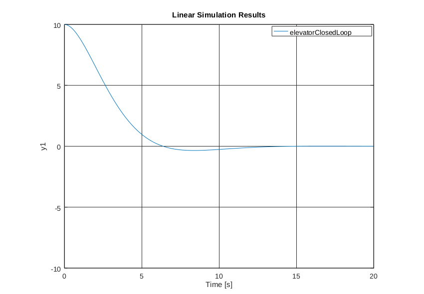

Note: This post will use matrix math pretty extensivly. If you haven't taken a linear algebra class, I'd recommend watching these three videos first: 1 2 3
In Part 3, we covered creating a mathematical model of our system. This is very useful, since it allows us to simulate our system on a computer before we run our controller on a real system. As you find models for more and more systems, you'll realize that they all are basically the same sorts of things - you'll have your differential equation (or equations) which describe how the variables change. It doesn't matter if you're controlling a elevator, a robot, a helicopter, or a self driving car, you can describe them all with a series of differential equations. As a reminder, here's the equation that we got from Part 3:
\[ \ddot{x} = \frac{u}{m} - \frac{d}{m} \times \dot{x} - A_{g} \]
Where \(u\) is the input force, \(m\) is the mass, \(d\) is the friction, and \(A_{g}\) is the acceleration due to gravity.
Since we commonly use these differential equations when we're writing code to control a system, it makes sense to represent them in ways that let us use the same tools to design any system. As it turns out, people have already made many tools to help design control systems! They don't use differential equations though, instead they use what's called a State Space representation of the system.
So how does a state space representation work? First, you have the "state". The state is the set of variables that can be used to represent the system completely. In our elevator example, that's the position and velocity of the elevator. The state is usually written as a vector called \(x\):
\[ x = \begin{bmatrix} p \\ \dot{p} \end{bmatrix} \]
I'm using \(p\) to describe the position now, since we're using \(x\) for the state. Again, \(\dot{p}\) is the time derivative of \(p\), or the velocity.
We also represent \(u\), our input as a vector. In this case, it's a 1x1 vector, because we only have one input!
\[ u = \begin{bmatrix} f \end{bmatrix} \]
I use \(f\) to represent the force that we're applying.
Now that we have our state and input out of the way, we want to describe how our systems responds to inputs. This is written like this:
\[ \dot{x} = \mathbf{A}x + \mathbf{B}u \]
What does that mean?
Well, we've defined two new matrices - \(\mathbf{A}\) and \(\mathbf{B}\). A describes how our system's state will change if we don't do anything to it - given the previous state, \(\mathbf{A}\) describes how the state will change. \(\mathbf{B}\) describes how our input will change the state.
Let's find our \(\mathbf{A}\) and \(\mathbf{B}\) matrices for our example elevator system!
First, we'll substitute in \(\dot{x}\), \(x\) and \(u\):
\[ \begin{bmatrix} \dot{p} \\ \ddot{p} \end{bmatrix} = \mathbf{A}\begin{bmatrix} p \\ \dot{p} \end{bmatrix} + \mathbf{B}\begin{bmatrix} f \end{bmatrix} \]
We know that we'll need \(\mathbf{A}\) to be a 2x2 matrix, and \(\mathbf{B}\) to be a 1x2 matrix:
\[ \begin{bmatrix} \dot{p} \\ \ddot{p} \end{bmatrix} = \begin{bmatrix} ? & ? \\ ? & ? \end{bmatrix}\begin{bmatrix} p \\ \dot{p} \end{bmatrix} + \begin{bmatrix} ? \\ ? \end{bmatrix}\begin{bmatrix} f \end{bmatrix} \]
First, let's find the top row of our \(\mathbf{A}\) matrix. This is essentially asking what we need to multiply \(\begin{bmatrix} p \\ \dot{p} \end{bmatrix}\) by to get \(\dot{p}\). Well, that's easy - we don't care about \(p\), so we multiply it by zero, and \(\dot{p} = \dot{p}\), so we multiply \(\dot{p}\) by 1:
\[ \begin{bmatrix} \dot{p} \\ \ddot{p} \end{bmatrix} = \begin{bmatrix} 0 & 1 \\ ? & ? \end{bmatrix}\begin{bmatrix} p \\ \dot{p} \end{bmatrix} + \begin{bmatrix} ? \\ ? \end{bmatrix}\begin{bmatrix} f \end{bmatrix} \]
Let's focus on the second line of our \(\mathbf{A}\) matrix now. This line will determine what the second derivative of our position is. Recall that this is also what our differential equation described! Here's our equation again, using \(p\) for position instead of \(x\):
\[ \ddot{p} = \frac{u}{m} - \frac{d}{m} \times \dot{p} - A_{g} \]
The \(\mathbf{A}\) matrix doesn't deal with how the input affects the system, just how the system will act if no force is applied. Because of this, we can drop the \(\frac{u}{m}\) term - we are assuming that \(u = 0\):
\[ \ddot{p} = -\frac{d}{m} \times \dot{p} - A_{g} \]
Now let's put the first part of that equation into our \(\mathbf{A}\) matrix. We want to say that \(\ddot{p} = -\frac{d}{m} \times \dot{p}\), so we put \(-\frac{d}{m}\) into our matrix:
\[ \begin{bmatrix} \dot{p} \\ \ddot{p} \end{bmatrix} = \begin{bmatrix} 0 & 1 \\ ? & -\frac{d}{m} \end{bmatrix}\begin{bmatrix} p \\ \dot{p} \end{bmatrix} + \begin{bmatrix} ? \\ ? \end{bmatrix}\begin{bmatrix} f \end{bmatrix} \]
But what do we do with the term for gravity? \(A_{g}\) isn't proportional to either \(p\) or \(\dot{p}\)! Where do we put it? This brings us to the first limitation of a state space representation - It only works on "Linear Time-Invariant" (often abbreviated "LTI") systems. But what does it mean for a system to be LTI? Well there are two parts to it:
- Linear
- If we apply an input \(a\) and then an input \(b\), it's the same as applying the input \(b\) and then the input \(a\).
- If we apply an input \(a\) and get a response \(r\), applying an input \(2 \times a\) will give the response \(2 \times r\).
- Time Invariant
- This means that applying an input \(a\) right now has the same effect as applying an input 5 seconds from now.
So why isn't our elevator LTI? Well, let's imagine applying an input of 3000 Newtons upwards for 1 second - this moves the elevator by a distance that we'll call \(\Delta p\). Now, say we apply a force of -3000 Newtons for on second - that is, apply the same magnitude of force, but downwards. If the system is linear, we should get a response of \(-\Delta p\). However, we won't! This is because gravity is helping the elevator when it's going down, but hurting it when it's going up.
Ok, so we can't have gravity in a LTI system. What do we do? Well, we simply ignore gravity! This is a simple solution, but we will need to compensate for our removal of gravity in our model elsewhere in our code. I'll explain how to do this in a future post, but for now, we'll just remove gravity.
Next, we'll finish up the \(\mathbf{A}\) matrix:
\[ \begin{bmatrix} \dot{p} \\ \ddot{p} \end{bmatrix} = \begin{bmatrix} 0 & 1 \\ 0 & -\frac{d}{m} \end{bmatrix}\begin{bmatrix} p \\ \dot{p} \end{bmatrix} + \begin{bmatrix} ? \\ ? \end{bmatrix}\begin{bmatrix} f \end{bmatrix} \]
At this point, you should make sure that you see how we got that matrix from this equation:
\[ \ddot{p} = -\frac{d}{m} \times \dot{p} \]
Now that we've done that, it's time to find our \(\mathbf{B}\) matrix!
Recall that we previously dropped the term that involved \(u\) from our equation - let's bring it back! (Our \(\mathbf{B}\) matrix describes how the system will respond to inputs, so when finding it we only care about terms of our equation that involve \(u\))
\[ \ddot{p} = \frac{u}{m}\]
We do the same thing for our \(\mathbf{B}\) matrix as we did for our \(\mathbf{A}\) matrix, which gets us the following equation:
\[ \begin{bmatrix} \dot{p} \\ \ddot{p} \end{bmatrix} = \begin{bmatrix} 0 & 1 \\ 0 & -\frac{d}{m} \end{bmatrix}\begin{bmatrix} p \\ \dot{p} \end{bmatrix} + \begin{bmatrix} 0 \\ \frac{1}{m} \end{bmatrix}\begin{bmatrix} f \end{bmatrix} \]
Thus we can say that:
\[ \mathbf{A} = \begin{bmatrix} 0 & 1 \\ 0 & -\frac{d}{m} \end{bmatrix} \] \[ \mathbf{B} = \begin{bmatrix} 0 \\ \frac{1}{m} \end{bmatrix} \]
There's one more thing that we need to have though! Just like our first equation was \(\dot{x} = \mathbf{A}x + \mathbf{B}u\), we're going to define a second equation!
\[ y = \mathbf{C}x + \mathbf{D}u \]
What's this all mean? Well, \(y\) is a vector that represents what sensors we have on our system. On our elevator, we'll just have a sensor that measures position. Only measuring position means that \(y = \begin{bmatrix} p \end{bmatrix}\). Thus we have this equation:
\[ \begin{bmatrix} p \end{bmatrix} = \mathbf{C}\begin{bmatrix} p \\ \dot{p} \end{bmatrix} + \mathbf{D}\begin{bmatrix} f \end{bmatrix} \]
We find the \(\mathbf{C}\) matrix the same way that we found the \(\mathbf{A}\) and \(\mathbf{B}\) matrices - this is just algebra, but can look confusing if you aren't used to matrix math:
\[ \begin{bmatrix} p \end{bmatrix} = \begin{bmatrix} 1 & 0\end{bmatrix}\begin{bmatrix} p \\ \dot{p} \end{bmatrix} + \mathbf{D}\begin{bmatrix} f \end{bmatrix} \]
The \(\mathbf{D}\) matrix is almost always set to zero, since our input doesn't have a direct effect on our sensors:
\[ \begin{bmatrix} p \end{bmatrix} = \begin{bmatrix} 1 & 0\end{bmatrix}\begin{bmatrix} p \\ \dot{p} \end{bmatrix} \]
This gives us all that we need for our state space model! All that a state space model is is four matrices that describe how the system works. Here are our matrices:
\[ \mathbf{A} = \begin{bmatrix} 0 & 1 \\ 0 & -\frac{d}{m} \end{bmatrix} \] \[ \mathbf{B} = \begin{bmatrix} 0 \\ \frac{1}{m} \end{bmatrix} \] \[ \mathbf{C} = \begin{bmatrix} 1 & 0 \end{bmatrix} \] \[ \mathbf{D} = 0 \]
We can replace the constatns \(m\) and \(d\) with their actual values:
\[ \mathbf{A} = \begin{bmatrix} 0 & 1 \\ 0 & -\frac{10}{100} \end{bmatrix} \] \[ \mathbf{B} = \begin{bmatrix} 0 \\ \frac{1}{100} \end{bmatrix} \] \[ \mathbf{C} = \begin{bmatrix} 1 & 0 \end{bmatrix} \] \[ \mathbf{D} = 0 \]
To get our final state space model! Using these matrices, we can describe how our system will operate!
At the beginning of this, I said that we use state space models because there are a lot of tools that use them - let's take a look at a way that we can use our state space model!
We're going to simulate running a Proportional-Derivative controller on our elevator using GNU Octave (A free and open-source MATLAB clone). You'll need to have octave installed in order to run this demo. You'll also need to install the "control" package for Octave - you can do this by opening Octave and typing pkg install -forge control. Once you've done that, click on the "editor" tab and paste in the following file:
% Setup for simulation
pkg load control
times = 0:0.1:20;
% Our state space matrices in matlab/octave format
A = [0 1;
0 -10/100];
B = [0;
1/100];
C = [1 0];
D = [0];
% We'll start at a position of 10 meters with at velocity of 0 m/s
startingPosition = [10; 0];
% You can think of this as the PID gains - the first value is the proportional
% value, and the second one is the derivative. We'll go into ways to find this
% automatically later, but for now, you can just manually twiddle with these :)
K = [30 70]
% This creates a model of our system, using our PID (or more accurately PD) gains
elevatorClosedLoop = ss(A-B*K,B,C,D);
% This simulates the system and plots it on the screen
lsim(elevatorClosedLoop, 0*ones(size(times)), times, startingPosition);
Now you can press F5 to run it, and a plot of position versus time should appear!

This is just barely scratching the surface of what you can do with a state space model - but for now, just know that there are a ton of tools out there that let you do really cool things with state space models.